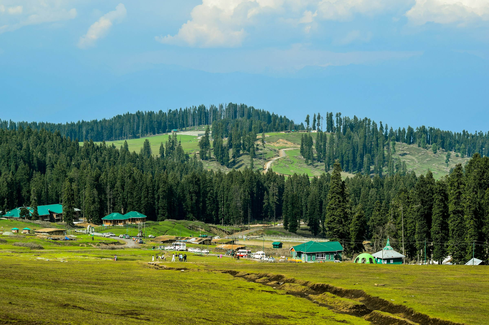
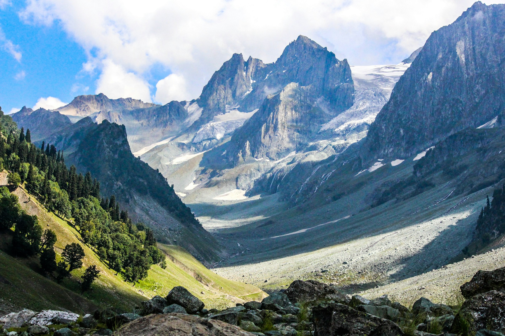
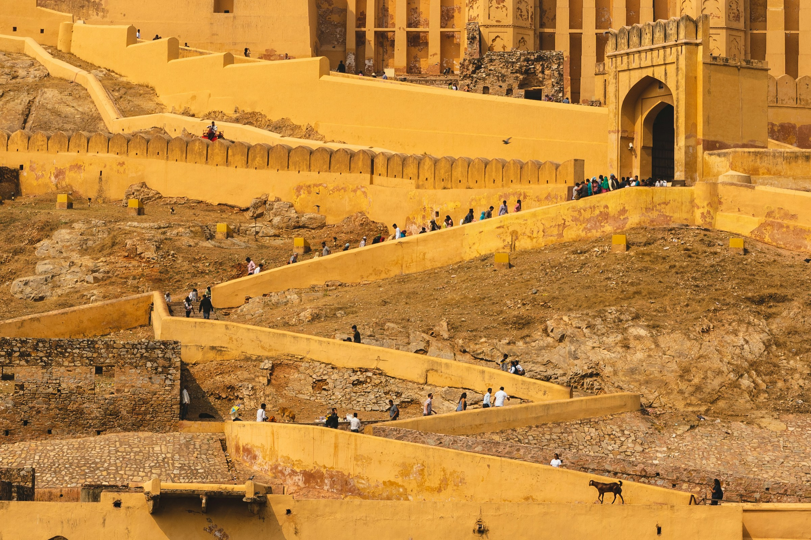
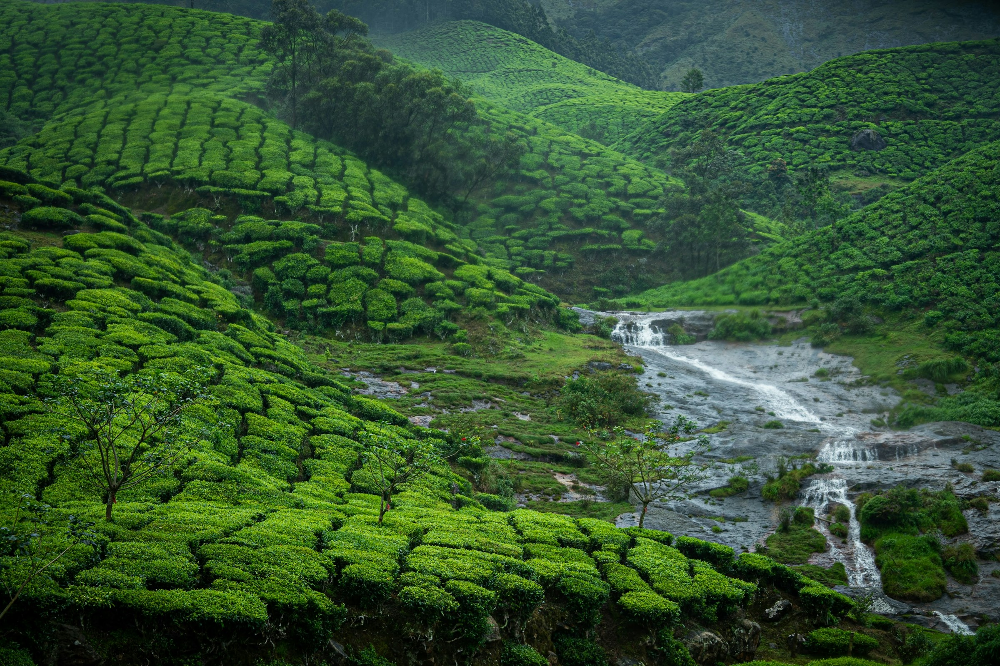
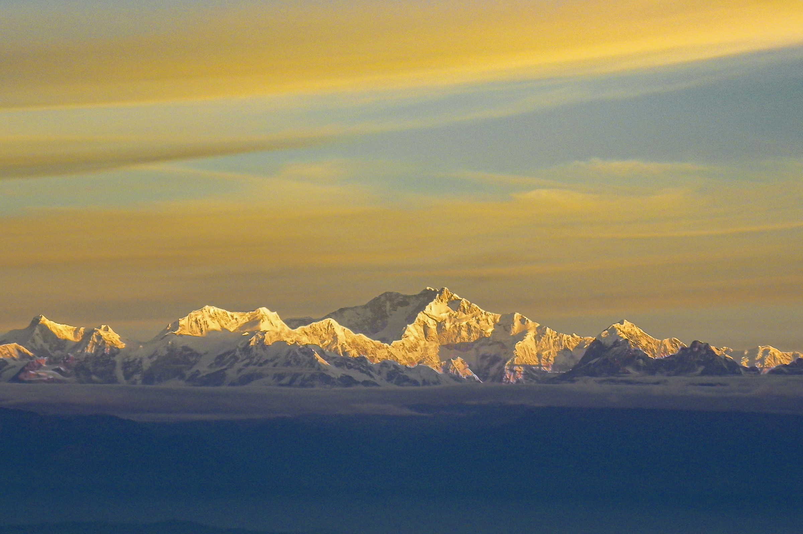
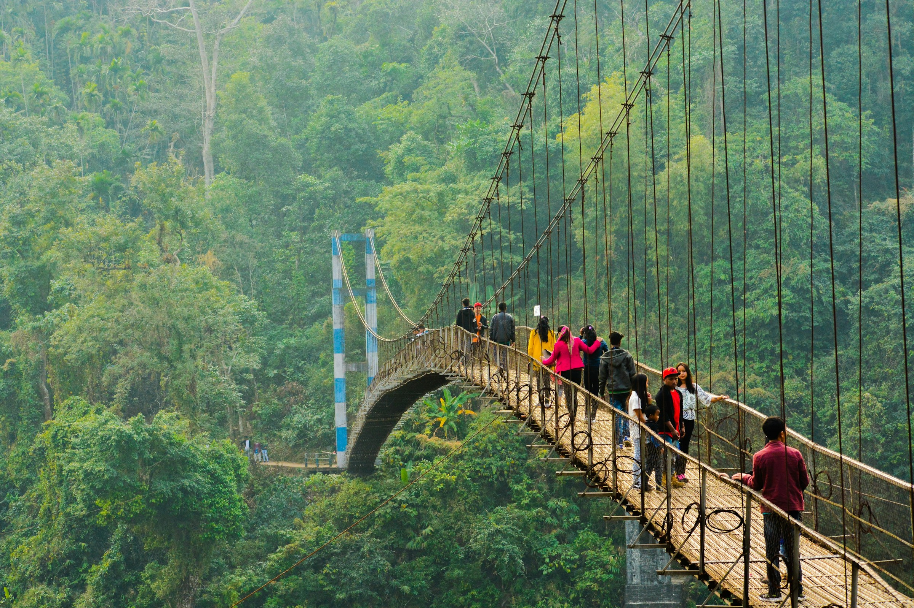
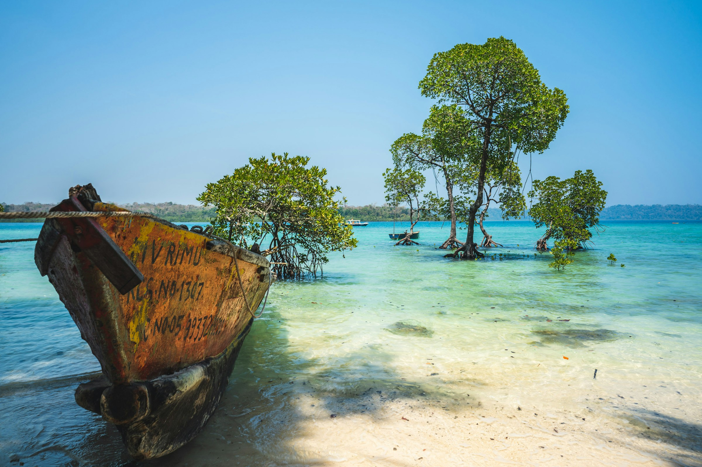
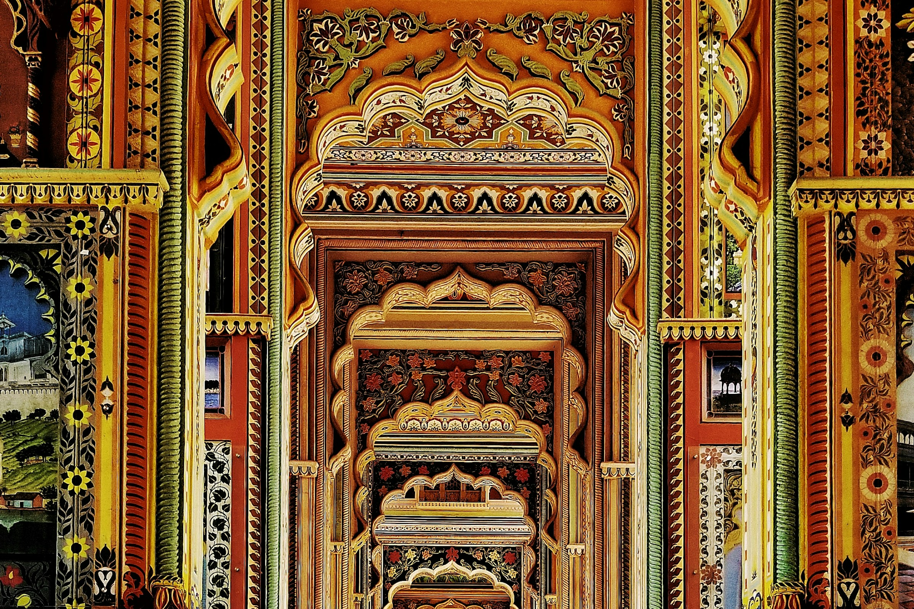

INCREDIBLE INDIA
Discover India differently.
From snow-covered mountains to tropical coastlines, find journeys shaped around the places and experiences that inspire you.
A COUNTRY OF MANY WORLDS
India, in every direction.
Take a first look across the regions. Then follow the place that calls to you.
6 regions to explore





INDIA, BEAUTIFULLY PLANNED
Start with what moves you.
Mountain air, a palace at dusk, an unhurried day on the water. Share the experiences you want, and we’ll help you plan the route.

A FEW WAYS TO BEGIN
India, at your pace.
India is not one journey. It's yours to shape.
Tell us where you'd like to begin.